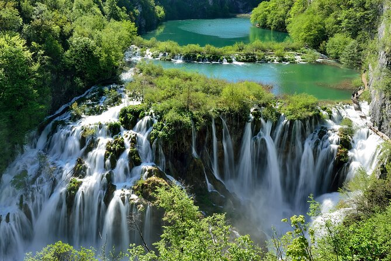
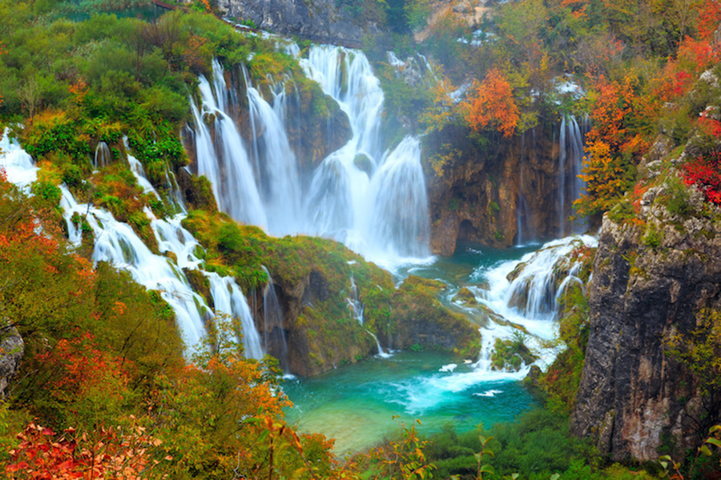
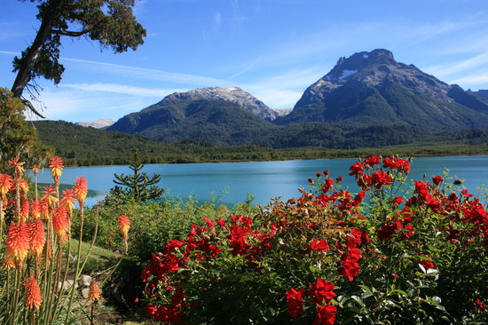
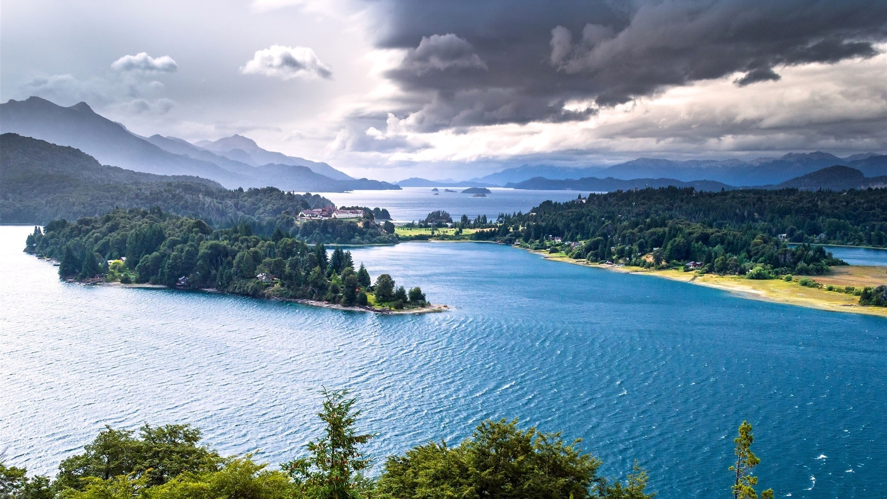

- hermosos
- Tranquilos y Cálidos
- Cómodos y Pensativos
PARQUE SHINJUKU
El jardín Nacional Shinjuku Gyoen es un jardín botánico de 58,3 hectáreas de extensión en Tokyo,Japón. sitio en Tokio donde disfrutar del hanami o la contemplación de los cerezos en flor, dado que cuenta con unos 1.500 cerezos (400 de la variedad somei yoshino en esta zona).
 LAGOS DE PLITVICE
El Parque Nacional de los Lagos de Plitviče es una reserva forestal de 295 km cuadrados de Croacia.Es conocido por una cadena de 16 lagos en terrazas unidas por cascadas que se extienden hacia un cañón de caliza.
 SAN CARLOS DE BARILOCHE
San Carlos de Bariloche es una ciudad en la región de la Patagonia argentina. Limita con Nahuel Huapi, un gran lago glaciar rodeado de montañas de los Andes.Bariloche es conocida por su arquitectura al estilo alpino de Suiza y su chocolate, que se vende en tiendas de la calle Mitre.